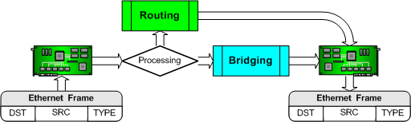
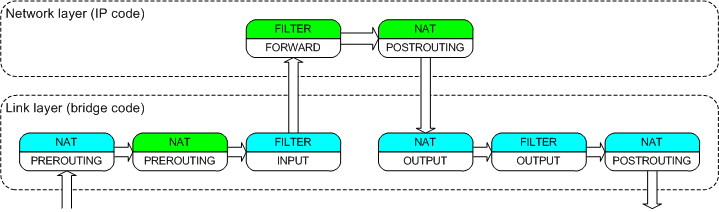
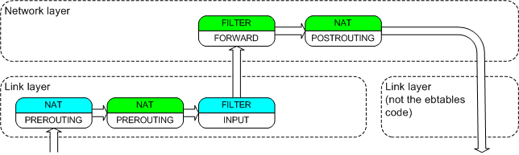
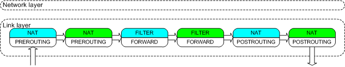
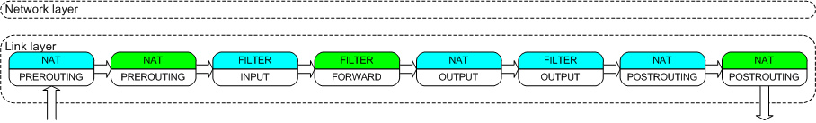
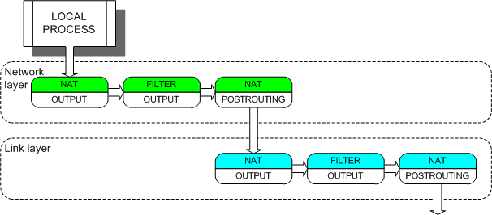
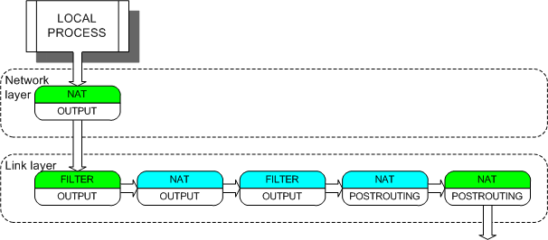
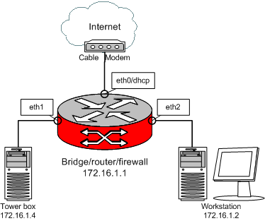
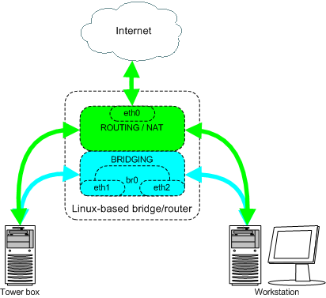

1. Introduction
This document describes how iptables and
ebtables filtering tables interact on a Linux-based bridge.
Getting a bridging firewall on a 2.4.x kernel consists of patching the kernel source
code. The 2.6 kernel contains the ebtables and br-nf code, so it doesn't have to be patched.
Because the demand was high, patches for the 2.4 kernel are still available at the ebtables homepage.
The br-nf code makes bridged IP frames/packets go through the iptables chains.
Ebtables filters on the Ethernet layer, while iptables
only filters IP packets.
The explanations below will use the TCP/IP Network Model.
It should be noted that the br-nf code sometimes violates the
TCP/IP Network
Model. As will be seen later, it is possible, f.e., to do IP DNAT inside the Link Layer.
We want to note that we are perfectly well aware that the word frame is used for the Link Layer,
while the word packet is used for the Network Layer. However, when we are talking about IP packets
inside the Link Layer, we will refer to these as frames/packets or packets/frames.
2. How frames traverse the ebtables chains
First thing to keep in mind is that we are talking about the Ethernet layer here, so the OSI layer 2 (Data link layer), or layer 1 (Link layer, Network Access layer) by the TCP/IP Network Model.
A packet destined for the local computer according to the bridge (which works on the Ethernet layer) isn't necessarily destined for the local computer according to the IP layer. That's how routing works (MAC destination is the router, IP destination is the actual box you want to communicate with).

Figure 2a. General frame traversal scheme
There are six hooks defined in the Linux bridging code, of which the BROUTING hook was added for ebtables.
Figure 2b. Ethernet bridging hooks
The hooks are specific places in the network code on which software can attach itself to process the packets/frames passing that place. For example, the kernel module responsible for the ebtables FORWARD chain is attached onto the bridge FORWARD hook. This is done when the module is loaded into the kernel or at bootup.
Note that the ebtables BROUTING and PREROUTING chains are traversed before the bridging decision, therefore these chains will even see frames that will be
ignored by the bridge. You should take that into account when using this chain. Also note that the chains won't see frames entering on a non-forwarding bridge port.
The bridge's decision for a frame (as seen on Figure 2b) can be one of these:
Figure 2c. Bridging tables (ebtables) traversal
process
Ebtables has three tables: filter, nat and broute, as shown in Figure 2c.
Figures 2b and 2c give a clear view where the ebtables chains are attached onto the bridge hooks.
When an NIC enslaved to a bridge receives a frame, the frame will first go through the BROUTING chain. In this special chain you can choose whether to route or bridge frames, enabling you to make a brouter. The definitions found on the Internet for what a brouter actually is differ a bit. The next definition describes the brouting ability using the BROUTING chain quite well:
A brouter can be used, for example,
to act as a normal router for IP traffic between 2
networks, while bridging specific traffic (NetBEUI, ARP,
whatever) between those networks. The IP routing
table does not use the bridge logical device, instead the box has
IP addresses assigned to the physical network devices that
also happen to be bridge ports (bridge enslaved NICs).
The default decision in the BROUTING chain is bridging.
Next the frame passes through the PREROUTING chain. In this chain you can alter the destination MAC address of frames (DNAT). If the frame passes this chain, the bridging code will decide where the frame should be sent. The bridge does this by looking at the destination MAC address, it doesn't care about the Network Layer addresses (e.g. IP address).
If the bridge decides the frame is destined for the local computer, the frame will go through the INPUT chain. In this chain you can filter frames destined for the bridge box. After traversal of the INPUT chain, the frame will be passed up to the Network Layer code (e.g. to the IP code). So, a routed IP packet will go through the ebtables INPUT chain, not through the ebtables FORWARD chain. This is logical.
Figure 2d. Incoming frame's chain traversal
Otherwise the frame should possibly be sent onto another side of the bridge. If it should, the frame will go through the FORWARD chain and the POSTROUTING chain. The bridged frames can be filtered in the FORWARD chain. In the POSTROUTING chain you can alter the MAC source address (SNAT).
Figure 2e. Forwarded frame's chain traversal
Locally originated frames will, after the bridging decision, traverse the nat OUTPUT, the filter OUTPUT and the nat POSTROUTING chains. The nat OUTPUT chain allows to alter the destination MAC address and the filter OUTPUT chain allows to filter frames originating from the bridge box. Note that the nat OUTPUT chain is traversed after the bridging decision, so this is actually too late. We should change this. The nat POSTROUTING chain is the same one as described above.
Figure 2f. Outgoing frames' chain traversal
3. A machine used as a bridge and a router (not a brouter)
Here is the IP code hooks scheme:

Figure 3a. IP code hooks
Here is the iptables packet traversal scheme.

Figure 3b. Routing tables (iptables) traversal
process
Note that the iptables nat OUTPUT chain is situated after the routing decision. As commented in the previous section (when discussing ebtables nat), this is too late for DNAT. This is solved by rerouting the IP packet if it has been DNAT'ed, before continuing. For clarity: this is standard behaviour of the Linux kernel, not something caused by our code.
Figures 3a and 3b give a clear view where the
iptables chains are attached onto the IP hooks. When the
bridge code and netfilter is enabled in the kernel, the iptables chains are
also attached onto the hooks of the bridging code. However,
this does not mean that they are no longer attached onto their
standard IP code hooks. For IP packets that get into
contact with the bridging code, the br-nf code will
decide in which place in the network code the iptables
chains will be traversed. Obviously, it is guaranteed that no chain is
traversed twice by the same packet. All packets that do not come into
contact with the bridge code traverse the iptables chains
in the standard way as seen in Figure 3b.
The following sections try, among other things,
to explain what the br-nf code does and why it does it.
It's possible to see a single IP packet/frame traverse the
nat PREROUTING, filter INPUT, nat OUTPUT, filter OUTPUT and
nat POSTROUTING ebtables chains.
This can happen when the bridge is also used as a router.
The Ethernet frame(s) containing that IP packet will have
the bridge's destination MAC address, while the destination
IP address is not of the bridge. Including the
iptables chains, this is how the IP packet runs
through the bridge/router (actually there is more going on,
see section 6):

Figure 3c. Bridge/router routes packet to a
bridge interface (simplistic view)
This assumes that the routing decision sends the packet to a bridge interface. If the routing decision sends the packet to non-bridge interface, this is what happens:

Figure 3d. Bridge/router routes packet to a
non-bridge interface (simplistic view)
Figures 3c and 3d assume the IP packet arrived on a bridge port. What is obviously "asymmetric" here is that the iptables PREROUTING chain is traversed before the ebtables INPUT chain, however this cannot be helped without sacrificing functionality. See the next section.
4. DNAT'ing bridged packets
Take an IP packet received by the bridge. Let's assume we want to do some IP DNAT on it. Changing the destination address of the packet (IP address and MAC address) has to happen before the bridge code decides what to do with the frame/packet.
So, this IP DNAT has to happen very early in the bridge
code. Namely before the bridge code actually does anything.
This is at the same place as where the ebtables nat
PREROUTING chain will be traversed (for the same reason).
This should explain the asymmetry encountered in Figures 3c
and 3d.
One should also be aware of the fact that frames for which the
bridging decision would be the fourth from the above list (i.e.
ignore the frame) will be seen in the PREROUTING chains of
ebtables and iptables.
5. Chain traversal for bridged IP packets
A bridged packet never enters any network code above layer 1 (Link Layer). So, a bridged IP packet/frame will never enter the IP code. Therefore all iptables chains will be traversed while the IP packet is in the bridge code. The chain traversal will look like this:

Figure 5. Chain traversal for bridged IP
packets
6. Using a bridge port in iptables rules
The wish to be able to use physical devices belonging to a bridge (bridge ports) in iptables rules is valid. Knowing the input bridge ports is necessary to prevent spoofing attacks. Say br0 has ports eth0 and eth1. If iptables rules can only use br0 there's no way of knowing when a box on the eth0 side changes its source IP address to that of a box on the eth1 side, except by looking at the MAC source address (and then still...). With the iptables physdev module you can use eth0 and eth1 in your iptables rules and therefore catch these attempts.
6.1. iptables wants to use the bridge destination ports:
To make this possible the iptables chains have to be traversed after the bridge code decided where the frame needs to be sent (eth0, eth1 or both). This has some impact on the scheme presented in section 3 (so, we are looking at routed traffic here, entering the box on a bridge port). It actually looks like this (in the case of Figure 3c):

Figure 6a. Chain traversal for routing, when the bridge
and netfilter code are compiled in the kernel.
6.2. IP DNAT for locally generated packets (so in the iptables nat OUTPUT chain):
The normal way locally generated packets would go through the chains looks like this:

Figure 6c. The normal way for locally generated
packets
From section 6.1 we know that this actually looks like this (due to the br-nf code):

Figure 6d. The actual way for locally generated
packets
Note that the iptables nat OUTPUT chain is traversed while the packet is in the IP code and the iptables filter OUTPUT chain is traversed when the packet has passed the bridging decision. This makes it possible to do DNAT to another device in the nat OUTPUT chain and lets us use the bridge ports in the filter OUTPUT chain.
7. Two possible ways for frames/packets to pass through the iptables PREROUTING, FORWARD and POSTROUTING chains
Because of the br-nf code, there are 2 ways a frame/packet can pass through the 3 given iptables chains. The first way is when the frame is bridged, so the iptables chains are called by the bridge code. The second way is when the packet is routed. So special care has to be taken to distinguish between those two, especially in the iptables FORWARD chain. Here's an example of strange things to look out for:
Consider the following situation

Figure 7a. Very basic setup.
The default gateway for 172.16.1.2 and 172.16.1.4 is 172.16.1.1. 172.16.1.1 is the bridge interface br0 with ports eth1 and eth2.
More details:
The idea is that traffic between 172.16.1.4 and 172.16.1.2 is bridged, while the rest is routed, using masquerading.

Figure 7b. Traffic flow for the example setup.
Here's a possible scheme to use at bootup for the bridge/router:
iptables -t nat -A POSTROUTING -s 172.16.1.0/24 -d 172.16.1.0/24 -j ACCEPT iptables -t nat -A POSTROUTING -s 172.16.1.0/24 -j MASQUERADE brctl addbr br0 brctl stp br0 off brctl addif br0 eth1 brctl addif br0 eth2 ifconfig eth1 0 0.0.0.0 ifconfig eth2 0 0.0.0.0 ifconfig br0 172.16.1.1 netmask 255.255.255.0 up echo '1' > /proc/sys/net/ipv4/ip_forward
The catch is in the first line. Because the iptables code gets executed for both bridged packets and routed packets, we need to make a distinction between the two. We don't really want the bridged frames/packets to be masqueraded. If we omit the first line then everything will work too, but things will happen differently. Let's say 172.16.1.2 pings 172.16.1.4. The bridge receives the ping request and will transmit it through its eth1 port after first masquerading the IP address. So the packet's source IP address will now be 172.16.1.1 and 172.16.1.4 will respond to the bridge. Masquerading will change the IP destination of this response from 172.16.1.1 to 172.16.1.4. Everything works fine. But it's better not to have this behaviour. Thus, we use the first line to avoid this. Note that if we would want to filter the connections to and from the Internet, we would certainly need the first line so we don't filter the local connections as well.
8. IP DNAT in the iptables PREROUTING chain on frames/packets entering on a bridge port
Through some groovy play it is assured that (see
/net/bridge/br_netfilter.c) DNAT'ed packets that after
DNAT'ing have the same output device as the input device
they came on (the logical bridge device which we like to
call br0) will go through the ebtables FORWARD
chain, not through the ebtables INPUT/OUTPUT chains. All
other DNAT'ed packets will be purely routed, so won't go
through the ebtables FORWARD chain, will go through
the ebtables INPUT chain and might go through the
ebtables OUTPUT chain.
9. Using the MAC module extension for iptables
The side effect explained here occurs when the netfilter code is enabled in the kernel, the IP packet is routed and the out device for that packet is a logical bridge device. The side effect is encountered when filtering on the MAC source in the iptables FORWARD chains. As should be clear from earlier sections, the traversal of the iptables FORWARD chains is postponed until the packet is in the bridge code. This is done so we can filter on the bridge port out device. This has a side effect on the MAC source address, because the IP code will have changed the MAC source address to the MAC address of the bridge device. It is therefore impossible, in the iptables FORWARD chains, to filter on the MAC source address of the computer sending the packet in question to the bridge/router. If you really need to filter on this MAC source address, you should do it in the nat PREROUTING chain. Agreed, very ugly, but making it possible to filter on the real MAC source address in the FORWARD chains would involve a very dirty hack and is probably not worth it. This of course makes the anti-spoofing remark of section 6 funny.
10. Using the iptables physdev match module for kernel 2.6
The 2.6 standard kernel contains an iptables match module called physdev which has to be used to match the bridge's physical in and out ports. Its basic usage is simple (see the iptables man page for more details):
iptables -m physdev --physdev-in <bridge-port>
and
iptables -m physdev --physdev-out <bridge-port>
11. Detailed IP packet flow
Joshua Snyder (<josh_at_imagestream.com>) made a detailed picture about the IP packet flow on a Linux bridging firewall.
Released under the GNU Free Documentation License.
Copyright (c) 2002-2003 Bart De Schuymer <bdschuym@pandora.be>,
Nick Fedchik <nick@fedchik.org.ua>.
Last updated November 9, 2003.